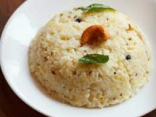

Pongal Recipe

Ingredients:
- 1 cup rice
- 1/4 cup split yellow moong dal (lentils)
- 1/2 teaspoon black pepper
- 1/2 teaspoon cumin seeds
- 1/2 inch ginger, grated
- 10-12 cashews
- 2 tablespoons ghee (clarified butter)
- 1/4 teaspoon turmeric powder
- A pinch of asafoetida (hing)
- Salt to taste
Instructions:
- Wash the rice and lentils together and drain.
- In a large pot, combine the rice, lentils, and 4 cups of water. Add turmeric and asafoetida. Cook until both the rice and lentils are soft and well-cooked.
- In a separate pan, heat the ghee. Add cumin seeds, black pepper, grated ginger, and cashews. Sauté until the cashews turn golden.
- Transfer this seasoning to the cooked rice and lentils. Mix well and add salt to taste.
- Simmer on low heat for a few minutes, allowing the flavors to blend.
- Serve hot with coconut chutney or sambar.